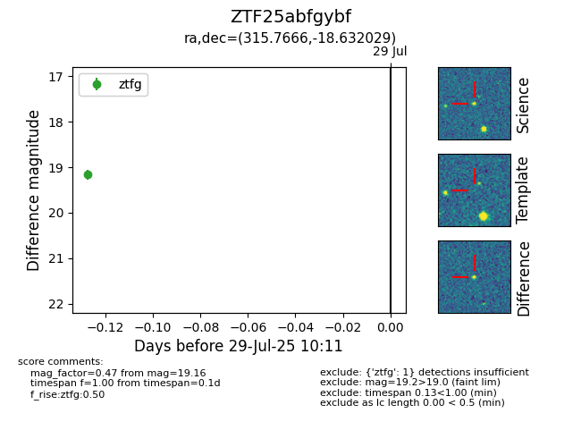

Target ZTF25abfgybf at 2025-08-05 23:02, see:
FINK: fink-portal.org/ZTF25abfgybf
Lasair: lasair-ztf.lsst.ac.uk/objects/ZTF25abfgybf
ALeRCE: alerce.online/object/ZTF25abfgybf
alt names
ZTF25abfgybf (ztf,fink)
coordinates:
equatorial (ra, dec) = (315.7666,-18.63203)
galactic (l, b) = (29.3644,-37.14630)
photometry
last ztfg=19.46
3 ztfg detections
